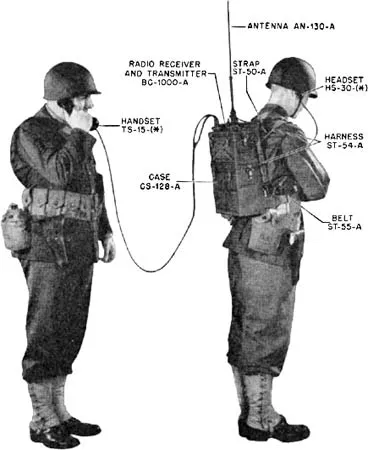
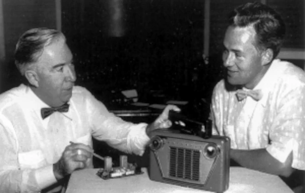

Fundação como Galvin Manufacturing
A empresa foi fundada em 1928 em Chicago pelos irmãos Paul e Joseph Galvin como Galvin Manufacturing Corporation. Seu primeiro produto foi o “eliminador de bateria”, um dispositivo que conectava rádios de corrente contínua alimentados por bateria à corrente alternada então encontrada em quase dois terços dos lares dos EUA. Em 1930, a empresa começou a vender um rádio automotivo de baixo custo , chamado Motorola, que se tornou a opção mais popular para carros novos, bem como um kit de reposição de sucesso. Em 1937, a empresa se diversificou para rádios de mesa domésticos e lançou o primeiro rádio automotivo a oferecer discagem por botão.
Diversificação de produtos Motorola
Em 1943, a empresa vendeu ações ao público pela primeira vez e, em 1947, mudou seu nome para Motorola, Inc., que era então uma marca bem conhecida . No ano seguinte, a Motorola ampliou seu papel no mercado de consumo dos EUA ao introduzir o primeiro aparelho de televisão por menos de US$ 200, o Golden View. Seu tubo de imagem redondo de sete polegadas ajudou a Motorola a garantir 10% do mercado de televisão dos EUA em 1954. Em 1953, a empresa, como outros fabricantes de televisão, criou seu próprio programa, o Motorola TV Hour, para aumentar o interesse no novo meio. Robert Galvin , filho de Paul Galvin e vice-presidente da empresa, apresentava a série dramática semanal. A linha de produtos de consumo da Motorola se ramificou para fonógrafos de alta fidelidade em meados da década de 1950.
